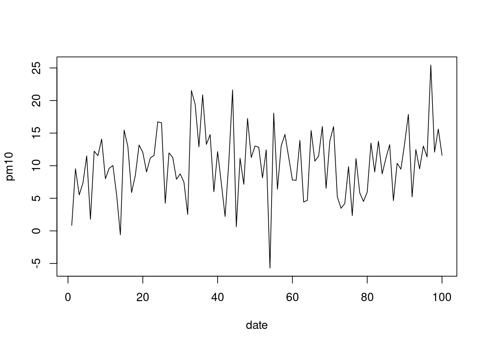
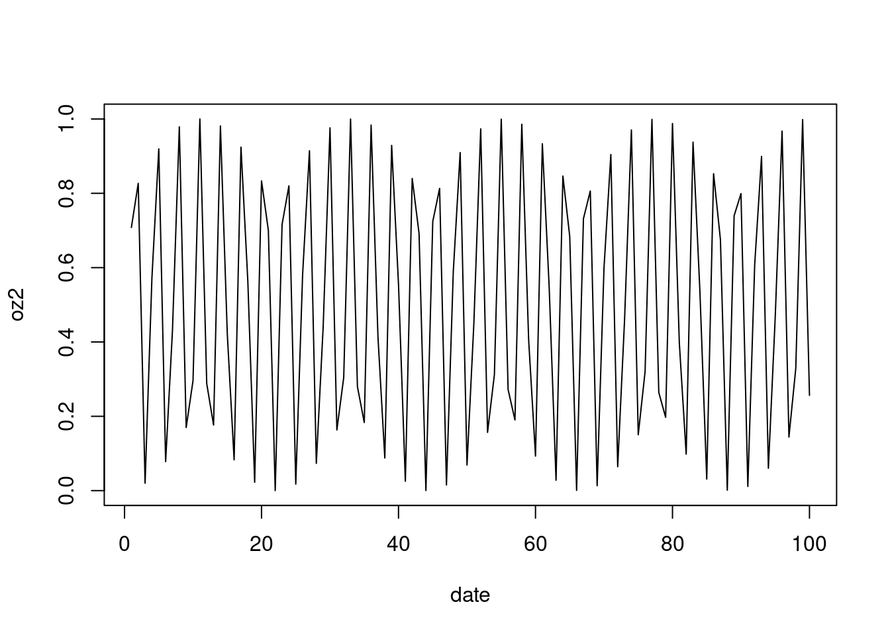
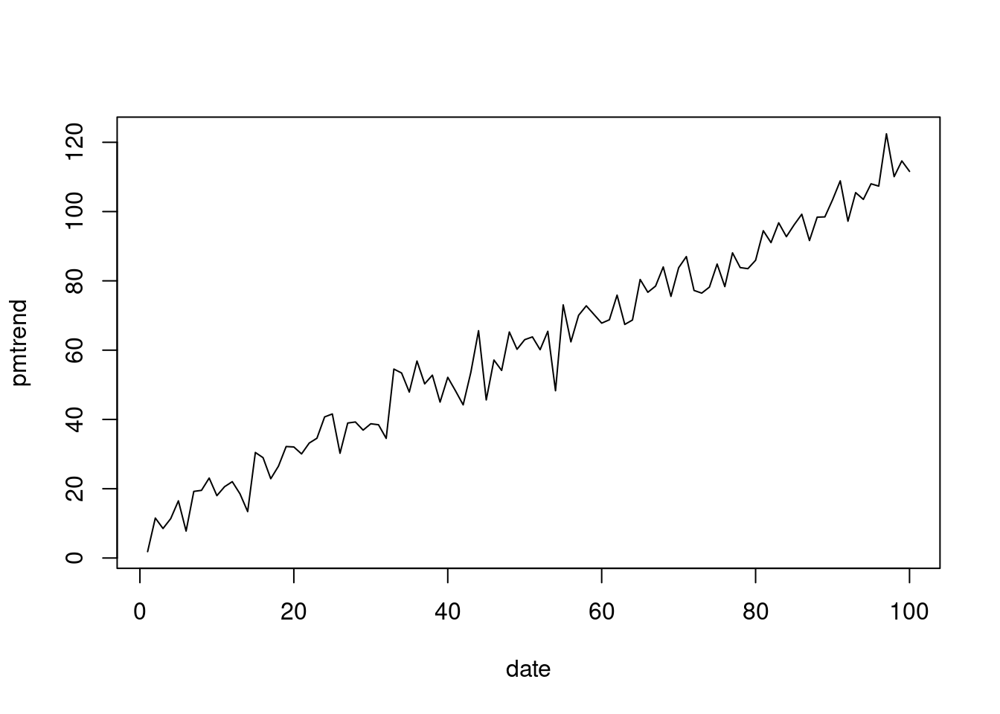
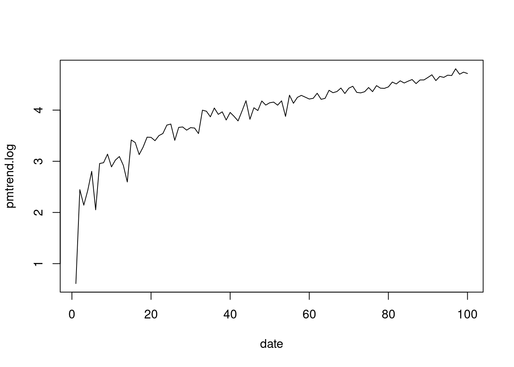

a <-1
b <-2
c <- -1
a*b+c[1] 1값(value)을 변수(variable)에 대입시키는 방법이다. 이를 이용해서 변수를 통한 연산이 가능하다.
a <-1
b <-2
c <- -1
a*b+c[1] 1값에는 숫자 외에도 여러 종류가 가능하다. 대표적인 것이 숫자(numeric), 문자(character), 논리값(logical) 값을 대입시킬 수 있다.
student_a_age <- 43
student_a_name <- '윤진하'
student_a_pass <- FALSE즉, 한변수에 하나의 값을 제공하는 0차원적 개념이다.
백터는 한 변수에 여러개의 값이 존재하는 경우다. 이때 c() 를 사용하고 c는 concatenate의 C이다. 결측값 (missing value) 는 NA나 NAN으로 표시된다. 백터에는 순서가 존재하므로, my_vector[i] 를 이용하여 i번째 값을 추출할 수있다.
student_all_age <- c(24, 31, 40, 16)
student_all_age[1] 24 31 40 16각각 아래의 명령에 따라 어떤 값이 나타날지 예상해보자.
student_all_age[1]
student_all_age[1:2]
student_all_age[c(1, 3)]
student_all_age[-4]숫자로된 백터는 기본 함수를 사용하여 요약값을 나타낼 수 있다. max(), min(), range(), length(), sum(), mean(), prod(), sd(), var(), sort() 등이 있다.
max(student_all_age)[1] 40length(student_all_age)[1] 4student_all_name <- c('영희', '철수', '은미', '재석')
summary(student_all_name) Length Class Mode
4 character character student_all_class <- c('group1','group2', 'group1', 'group2' )
summary(student_all_class) Length Class Mode
4 character character 여기서 student_all_class 는 group이 1과2로 나뉘어 있는 것을 볼 수 있다. 이러한 개념은 팩터로 살펴볼 수 있다. 컴퓨터에게 sutdent_all_class가 팩터라는 것을 알려주자.
student_all_group <-factor(c('group1','group2', 'group1', 'group2' ))
summary(student_all_group)group1 group2
2 2 group이 있으니 몇가지 쉬운 이용방법이 생겼다.
tapply(student_all_age, student_all_group, mean)group1 group2
32.0 23.5 미리 이야기 하지만 *apply에 익수해져야한다. 이제, 1차원의 데이터 형식을 보았다. 메트릭스로 넘어 2차원의 자료를 살펴 보자
우리가 흔히 보았던 엑셀이나 표 형식의 데이터이다. 메트릭스는 행(row)와 열(column)로 구성되어 있고 백터 변수를 행을 기준으로 나열 할지, 열을 기준으로 할지 여부로 구성할 수 있다. 어떤 결과가 나오는지 확인해 보자.
A1 = matrix(
c(1, 2, 3, 4, 5, 6, 7, 8), # 값
nrow=2, # 행 갯수
ncol=4, # 열 갯수
byrow = TRUE) # 행을 기준으로 순서대로
A1 # 출력그렇다면 똑 같이 1, 2, 3, 4, 5, 6, 7, 8를 이용해서 아래의 행렬을 만들어보자
[,1] [,2]
[1,] 1 2
[2,] 3 4
[3,] 5 6
[4,] 7 8행렬이 행(column)에 같은 성질의 값 들로 이루어져 있다면 데이터프래임은 좀더 자유롭다고 볼 수 있다.
dspub_class <- data.frame(
'name' = student_all_name,
'age' = student_all_age,
'group' = student_all_group
)
dspub_class name age group
1 영희 24 group1
2 철수 31 group2
3 은미 40 group1
4 재석 16 group2데이터프래임 부터는 tidyverse 패키지를 사용해서 몇가지를 보겠다. %>%는 pipe로 앞에 있는 것을 가지도 뒤에 명령을 하자는 조사 같은 것으로 이해하자. mutate는 가로 안에 있는 명령을 수행해서 새로운 변수를 만들라는 것이다.
#install.packages("tidyverse")
library(tidyverse)dspub_class %>%
group_by(group) %>%
summarize(avg = mean(age))# A tibble: 2 × 2
group avg
<fct> <dbl>
1 group1 32
2 group2 23.5과제가 있다. 과제는 DSpub내 group1 과 gropu2가 몇개인지와 최고 나이를 맞추는 것이다. 영희/철수에게 첫번째 숙제를, 은미/재석에게 두번째 숙제를 냈다. 과제를 받았다.
homework1 <- dspub_class %>%
group_by(group) %>%
mutate(avg_age = mean(age))
homework2 <- dspub_class %>%
group_by(group) %>%
mutate(max_age = max(age))homework1# A tibble: 4 × 4
# Groups: group [2]
name age group avg_age
<chr> <dbl> <fct> <dbl>
1 영희 24 group1 32
2 철수 31 group2 23.5
3 은미 40 group1 32
4 재석 16 group2 23.5homework2# A tibble: 4 × 4
# Groups: group [2]
name age group max_age
<chr> <dbl> <fct> <dbl>
1 영희 24 group1 40
2 철수 31 group2 31
3 은미 40 group1 40
4 재석 16 group2 31이것을 어딘가에 저장하고 싶다, 이때 list를 사용할 수 있다.
second_week_dspub <-
list(
student_all_age,
student_all_class,
student_all_group,
student_all_name,
dspub_class,
homework1,
homework2
)
second_week_dspub[[1]]
[1] 24 31 40 16
[[2]]
[1] "group1" "group2" "group1" "group2"
[[3]]
[1] group1 group2 group1 group2
Levels: group1 group2
[[4]]
[1] "영희" "철수" "은미" "재석"
[[5]]
name age group
1 영희 24 group1
2 철수 31 group2
3 은미 40 group1
4 재석 16 group2
[[6]]
# A tibble: 4 × 4
# Groups: group [2]
name age group avg_age
<chr> <dbl> <fct> <dbl>
1 영희 24 group1 32
2 철수 31 group2 23.5
3 은미 40 group1 32
4 재석 16 group2 23.5
[[7]]
# A tibble: 4 × 4
# Groups: group [2]
name age group max_age
<chr> <dbl> <fct> <dbl>
1 영희 24 group1 40
2 철수 31 group2 31
3 은미 40 group1 40
4 재석 16 group2 31숙제 과제만 뽑아 내서 보고 싶다면, 해당 list만 출력하면 된다. 즉 list에는 거의 모든 자료가 이질성을 갖고 있더라도 저장된다.
second_week_dspub[[7]]# A tibble: 4 × 4
# Groups: group [2]
name age group max_age
<chr> <dbl> <fct> <dbl>
1 영희 24 group1 40
2 철수 31 group2 31
3 은미 40 group1 40
4 재석 16 group2 31단순 계산기로 사용할 수 있다. 예를 들어 1+2 의 값이라던가, log2(10) 등을 계산할 수 있다. Rsutdio 의 스크립트 창이나 콘솔 창에 아래의 항목을 작성해 볼 수 있다.
3+4;4-3;4/3;3*4
log2(10)
abs(-4)
sqrt(4)기초 함수는 아래와 같다.
| Operator | Description |
|---|---|
| + | addition |
| - | subtraction |
| * | multiplication |
| / | division |
| ^ or ** | exponentiation |
| x %% y | modulus (x mod y) 5%%2 is 1 |
| x %/% y | integer division 5%/%2 is 2 |
| Operator | Description |
|---|---|
| < | less than |
| <= | less than or equal to |
| > | greater than |
| >= | greater than or equal to |
| == | exactly equal to |
| != | not equal to |
| !x | Not x |
| x | y |
| x & y | x AND y |
| isTRUE(x) | test if X is TRUE |
| Operator | Description |
|---|---|
| Logarithms and exponentials | log2(x), log10(x), exp(x) |
| Trigonometric functions | cos(x), sin(x), tan(x), acos(x), asin(x), atan(x) |
| Others | abs(x): absolute value; sqrt(x): square root. |
기초 함수 중에 몇몇은 그림을 그려보아야 이해가 쉽다.
pm10 = rnorm(n=100, mean = 10, sd = 5) # 평균이 10이고 표준편차가 5인 100개의 랜덤 변수를 pm10 이라고 가정하자
date= rep(1:100) # 1일부터 100까지의 시간이 있다고 해보자
plot(x=date, y=pm10, type = "l") # "l" line 형식으로 그려보았다. 
oz = sin(date) # 오존은 시간에 따라 햇빛이 있을 때 높게 올라간다. sine 함수를 따른다고 가정해 보자
plot(x=date, y = oz, type = "l") # oz2 = oz**2 # -값을 갖는 것은 좀 이상하다. 제곱을 통해 변경해 보자
plot(x=date, y = oz2, type = "l") # 
ozabs = abs(oz) # 접곱보다 절대 값이 어떨까?
plot(x=date, y = ozabs, type = "l") # pmtrend = pm10 + date # 시간에 따라 pm10 농도가 올라간다고 가정해 보자
plot(x=date, y = pmtrend, type="l")
pmtrend.log = log(pmtrend) # 로그 값을 넣어보자. 특별한 의미는 없이 함수에 대한 실습이다.
plot(x=date, y = pmtrend.log, type="l") #
if-else 라는 조건에 따라 연산을 수행시킨다. 예를 들어 1, 2, 3, 4, 5, 6, 7, 8, 9, 10 의 백터에서 5보다 작으면 A 크면 B를 적용시켜주다.
nums<- 1
if (nums <5) {
chars = 'A'
} else{
chars = 'B'
}
chars[1] "A"nums <- 6
if (nums <5) {
chars = 'A'
} else{
chars = 'B'
}
chars[1] "B"몇가지 예제를 더 살펴보자.
a<-round(rnorm(10)*10)
a [1] -26 5 3 -16 3 2 -8 12 7 1tab <- ifelse(a>0, '양수', '음수')
tab [1] "음수" "양수" "양수" "음수" "양수" "양수" "음수" "양수" "양수" "양수"data.frame(a, tab) a tab
1 -26 음수
2 5 양수
3 3 양수
4 -16 음수
5 3 양수
6 2 양수
7 -8 음수
8 12 양수
9 7 양수
10 1 양수데이터 클리닝에서 자주 사용하는 두개의 조건문 any()와 all()이 있다. any()는 하나라도 TRUE값이 있으면 TRUE를 변환해주고, all()은 모두 TRUE여야 TRUE를 돌려준다.
new.var <- c(1, 2, NA)
is.na(new.var)[1] FALSE FALSE TRUEany(is.na(new.var))[1] TRUEall(is.na(new.var))[1] FALSEindex 를 이용하면 조건 문에서 IF (또는 Where)의 개념을 사용할 수 있다. iris 데이터에서 Sepal.Length 가 가장 큰 값은 찾고, Sepal.Length 최고 값을 갖은 Species의 종류를 찾고자한다. 어떻게 하면될까?
head(iris) Sepal.Length Sepal.Width Petal.Length Petal.Width Species
1 5.1 3.5 1.4 0.2 setosa
2 4.9 3.0 1.4 0.2 setosa
3 4.7 3.2 1.3 0.2 setosa
4 4.6 3.1 1.5 0.2 setosa
5 5.0 3.6 1.4 0.2 setosa
6 5.4 3.9 1.7 0.4 setosatable(iris$Species)
setosa versicolor virginica
50 50 50 max(iris$Sepal.Length)[1] 7.9max.length <- which.max(iris$Sepal.Length)
iris$Species[max.length][1] virginica
Levels: setosa versicolor virginica같은 방법으로 iris 데이터에서 Sepal.Length 가 가장 작은 찾고, Sepal.Length 최소 값을 갖은 Species의 종류를 찾고자한다. 최소 값과 종류를 쏘보자
min(iris$Sepal.Length)[1] 4.3min.length <- which.min(iris$Sepal.Length)
iris$Species[min.length][1] setosa
Levels: setosa versicolor virginicaR을 이용하는 이유중 하나가 함수를 손쉽게 만들고 그 결과를 활용하기가 쉽다는 것이다. 자동문, 반복문, 데이터 클리능, 데이터 시각화 등에서 자주 사용하는 기본 원리이다. 숫자 2개를 넣으면 덧 샘을 해주는 함수를 만들어 보자
addtive.function = function(x, y ){
x + y
}addtive.function(100, 2)[1] 102퀴즈
숫자 2개를 넣으면 두 수의 차이를 보여주는 함수를 만들어 보자 abs 사용. #-#에 계산식을 넣어 함수를 완성해 보세요.
abs.function= function(x, y ){
#--#
}평균을 구해주는 함수 avg를 만들어 보자. length는 길이를 말해주니, 몇개의 변수값이 있는 지 알 수 있다.
my_vector<- 1:50
avg <- function(x){
sum(x)/length(x)
}
avg(my_vector)[1] 25.5좀더 확장해서 변수 갯수, 평균, 최고, 최저 값을 나타내는 함수를 만들어 보자.
tabs <- function(x){
data.frame( '평균' = mean(x),
'변수갯수' = length(x),
'최고값' = max(x),
'최저값' = min(x)
)
}
tabs(my_vector) 평균 변수갯수 최고값 최저값
1 25.5 50 50 1그럼 이를 이용해서, 다음을 해석해 보자
avg <- function(x, arithmetic = TRUE){
n <- length(x)
ifelse(arithmetic, sum(x)/n, prod(x)^(1/n))
}1a, 2a, 3a, 4a, 5a, 6a, 7a, 8a, 9a, 10a 을 만들어보자, 어떻게 하면될까?
c('1a', '2a', '10a') # 이렇게 해보는 것도 좋지만[1] "1a" "2a" "10a"반목문을 사용하면, 아래와 같다.
for (i in 1:10){
print(paste0(i, 'a'))
}[1] "1a"
[1] "2a"
[1] "3a"
[1] "4a"
[1] "5a"
[1] "6a"
[1] "7a"
[1] "8a"
[1] "9a"
[1] "10a"물론 대부분 이렇게 사용하지만, 아래와 같이 사용한다.
paste0(1:10, "a") [1] "1a" "2a" "3a" "4a" "5a" "6a" "7a" "8a" "9a" "10a"1:n까지의 숫자 합을 만들어보자, 그리고 이를 1부터 100일때 까지 만들고 그림을 그려보자
compute <- function(n){ sum(1:n)}
compute(10)[1] 55test <-c()
for (n in 1:100){
test[n] <- compute(n)
}
plot(1:100, test)
사실 ifelse 를 잘 사용하지 않는다. 이는 속도의 문제와도 관련된다. 실제 ifesel 로 10분이 걸리는 연산이 1분으로 줄수도 있다. 이때 사용하게 되는 것이 백터화와 apply 구문이다. 이미 past0(1:10,“a”) 같은 구문이 편할 수 있다는 것을 느꼈을 것이다. 이번에는 구구단 2단과 3단을 서로 곱해보자. 어떻게 하면 좋을까 for와 if를 생각하기 보다 아래를 고려해 보자. 아래가 백터화이다.
n2 <- c(1:9*2)
n3 <- c(1:9*3)
n2*n3[1] 6 24 54 96 150 216 294 384 4862단에 3단이 아닌 다른 단을 곱하는 함수를 사용해 보자
new.function<-function(n2){
c(1:9*2) * c(1:9*n2)
}
new.function( 4)[1] 8 32 72 128 200 288 392 512 648그럼 3단 대신에 1, 2, 3, 4, 5, 6, 7, 8, 9 단을 모두 해보자
sapply(1:9, new.function) [,1] [,2] [,3] [,4] [,5] [,6] [,7] [,8] [,9]
[1,] 2 4 6 8 10 12 14 16 18
[2,] 8 16 24 32 40 48 56 64 72
[3,] 18 36 54 72 90 108 126 144 162
[4,] 32 64 96 128 160 192 224 256 288
[5,] 50 100 150 200 250 300 350 400 450
[6,] 72 144 216 288 360 432 504 576 648
[7,] 98 196 294 392 490 588 686 784 882
[8,] 128 256 384 512 640 768 896 1024 1152
[9,] 162 324 486 648 810 972 1134 1296 1458상기 행렬을 만들기위해 ifelse를 사용하거나 for 문을 사용하면 좀더 머리가 복잡해 질 수 있다. apply 구문은 확실히 머리가 가벼워진다. tidyverse 부분을 할 때 apply, lapply, sapply등을 다루게 될 것이다.
R을 여러 데이터를 이미 내장하고 있습니다. 이를 통해 여러 통계와 기계학습 등을 연습할 수 있도록 돕고 있습니다. 그 중 가장 유명한 자료인 iris 데이터를 불러오겠습니다.
data("iris")iris 데이터셋은 아이리스 꽃에 대한 측정값을 포함하고 있습니다. 이 데이터셋에는 3개의 다른 아이리스 꽃 종류에 대한 총 150개의 샘플이 있습니다. 데이터의 구조는 다음과 같습니다:
library(tidyverse)
iris %>% head() Sepal.Length Sepal.Width Petal.Length Petal.Width Species
1 5.1 3.5 1.4 0.2 setosa
2 4.9 3.0 1.4 0.2 setosa
3 4.7 3.2 1.3 0.2 setosa
4 4.6 3.1 1.5 0.2 setosa
5 5.0 3.6 1.4 0.2 setosa
6 5.4 3.9 1.7 0.4 setosaR에서 데이터프레임을 행렬 방식으로 선택하는 방법은 대괄호 표기법을 사용하여 행 번호, 열 번호 형식으로 선택하는 것입니다. 데이터프레임의 특정 행과 열을 선택할 때는 다음 규칙을 따릅니다:
행 번호는 데이터프레임의 특정 행을 선택합니다. 열 번호는 데이터프레임의 특정 열을 선택합니다.
첫 번째 행과 두 번째 열을 선택: iris[1, 2]는 첫 번째 행의 두 번째 열을 선택합니다. 결과는 첫 번째 꽃의 Sepal.Width 값이 됩니다.
iris[1, 2][1] 3.5첫 번째 행 전체를 선택: iris[1, ]는 첫 번째 행의 모든 열을 선택합니다.
iris[1, ] Sepal.Length Sepal.Width Petal.Length Petal.Width Species
1 5.1 3.5 1.4 0.2 setosa첫 번째 열 전체를 선택: iris[, 1]는 첫 번째 열의 모든 행을 선택합니다.
iris[ , 1] %>% head()[1] 5.1 4.9 4.7 4.6 5.0 5.4특정 행과 여러 열을 선택: iris[1, c(1, 3)]는 첫 번째 행의 첫 번째 열과 세 번째 열을 선택합니다.
iris[1, c(1, 3)] Sepal.Length Petal.Length
1 5.1 1.4특정 행과 특정 열을 이름으로 선택: 열의 이름을 직접 사용하여 데이터를 선택할 수도 있습니다. 예를 들어, iris[1, “Sepal.Width”]: 첫 번째 행에서 Sepal.Width 열의 값.
iris[1, "Sepal.Width"][1] 3.5여러 행과 여러 열 선택: 여러 행과 열을 동시에 선택할 수도 있습니다. 예를 들어, 첫 번째와 세 번째 행, 그리고 첫 번째와 두 번째 열을 선택하려면:
iris[c(1, 3), c(1, 2)] Sepal.Length Sepal.Width
1 5.1 3.5
3 4.7 3.2Species 는 종에 대한 이야기이고, 이것은 문자로 구성되어 있습니다. 나머지는 모두 숫자로 되어 있습니다. 숫자로 되어 있는 변수들에서 평균, 중간, 표준편차를 구해보겠습니다.
이 예제를 통해 apply 구문이 어떻게 사용되는지 알아보겠습니다. 우선 apply구문을 사용하지 않고 구해보겠습니다.
iris_num=iris[, c(1:4)] # Species 를 제외한 나머지 변수만 선정
iris_num=iris %>% select(1:4) # tidyverse를 통해 같은 결과 사용
# 아래와 같인 평균, sd 를 구했습니다.
iris_num %>% pull(Sepal.Length) %>% mean()[1] 5.843333iris_num %>% pull(Sepal.Width) %>% mean()[1] 3.057333iris_num %>% pull(Petal.Length) %>% mean()[1] 3.758iris_num %>% pull(Petal.Width) %>% mean()[1] 1.199333iris_num %>% pull(Sepal.Length) %>% sd()[1] 0.8280661iris_num %>% pull(Sepal.Width) %>% sd()[1] 0.4358663iris_num %>% pull(Petal.Length) %>% sd()[1] 1.765298iris_num %>% pull(Petal.Width) %>% sd()[1] 0.7622377같은 방식으로 median 도 구할 수 있겠습니다. 그런데, 무언가 반복되는 느낌이 듭니다. 코드를 만들때 반복된다면, 동일한 논리가 반복된다면 함수를 사용할 수 있습니다. 이때 apply 구문을 이용해 보겠습니다. apply는 결과를 백터로, lapply는 결과를 list로 반환해 줍니다. sapply는 lapply 값을 보기 좋게 만들어 줍니다.
apply(iris_num, 2, mean)Sepal.Length Sepal.Width Petal.Length Petal.Width
5.843333 3.057333 3.758000 1.199333 lapply(iris_num, mean)$Sepal.Length
[1] 5.843333
$Sepal.Width
[1] 3.057333
$Petal.Length
[1] 3.758
$Petal.Width
[1] 1.199333sapply(iris_num, mean)Sepal.Length Sepal.Width Petal.Length Petal.Width
5.843333 3.057333 3.758000 1.199333 그렇다면 이제는 평균, 중간값, 표준편차 모두를 구해보겠습니다. 반복되는 것이니 함수를 만들겠습니다. stat_smry는
stat_smry = function(x){
list(
mean =mean(x),
median=median(x),
std = sd(x)
)
}이제 sapply를 이용하여 작업해 보겠습니다.
sapply(iris_num, stat_smry) Sepal.Length Sepal.Width Petal.Length Petal.Width
mean 5.843333 3.057333 3.758 1.199333
median 5.8 3 4.35 1.3
std 0.8280661 0.4358663 1.765298 0.7622377 개인적으로 저는 lapply를 사용합니다. 그 이유는 단계별 확인 후 합치는 것이 데이터를 분석할 때 유리한 점이 있기 때문입니다. 단계별 확인이란 반복하는 데이터 별로 어디에 문제가 있는지 확인하는 과정이 데이터가 커질 수록 꼭 필요하기 때문입니다. 아래는 lapply로 tt라는 list를 만들고 확인한 후 do.call(rbidn, .) 모두 합치는 방식입니다 .rbind 는 row bind 로 list 안에 있는 백터, 데이터프레임 등을 누적해서 합쳐서 하나의 파일로 만드는 것입니다. 복잡하지요, 이해보다는 익숙해 지는 순간이 온 것입니다.
tt = lapply(iris_num, stat_smry)names(tt) # 각 반복된 요인 이름[1] "Sepal.Length" "Sepal.Width" "Petal.Length" "Petal.Width" tt[[1]] # 첫번째 여기서는 "Sepal.Length"에대한 값$mean
[1] 5.843333
$median
[1] 5.8
$std
[1] 0.8280661do.call(rbind, tt) # 정리된 모양 mean median std
Sepal.Length 5.843333 5.8 0.8280661
Sepal.Width 3.057333 3 0.4358663
Petal.Length 3.758 4.35 1.765298
Petal.Width 1.199333 1.3 0.7622377